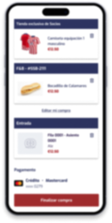
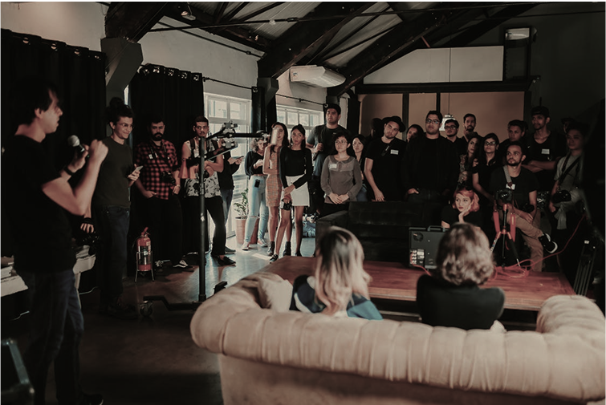
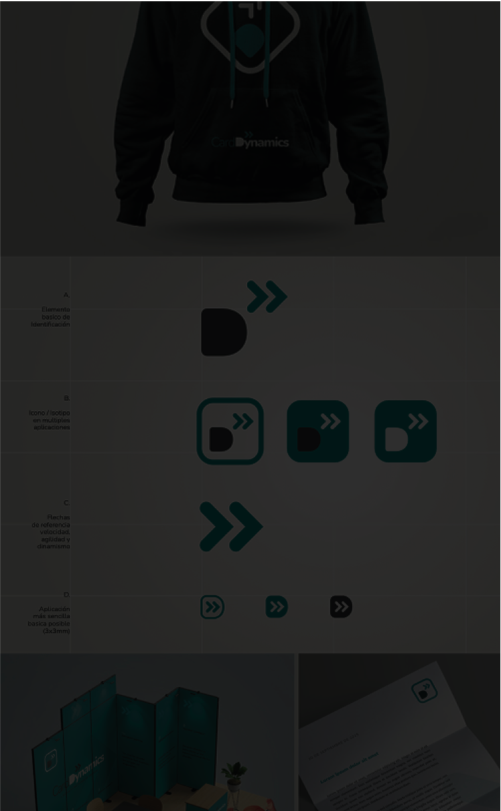

Felipe Amorim
Felipe AmorimProduct design
Research, UX/UI, prototyping and design systems that turn a product brief into a useful experience.
I’m Felipe Amorim, also known as Felipe Caroé, a senior product designer with 20+ years across UX, service design, brand and digital products.
I’ve founded design ventures, led teams and worked with organisations as they built or improved products. I bring that commercial and team perspective into the work itself: framing the problem, shaping the experience and making the interface.
Most recently, I worked on AI-powered product experiences at Luzia. I now take on a limited number of well-scoped freelance briefs, drawing on 20+ years in UX, service design and product delivery.
Before that, I led design at 4all, founded Brava Digital and co-founded Pipe Digital. I work in Portuguese, English, Spanish and Italian with agencies, studios and product teams across Europe and the UK.
Research, UX/UI, prototyping and design systems that turn a product brief into a useful experience.
Design useful AI interactions from the first prompt to waiting, uncertainty, correction and recovery. Turn model capability into an experience people can understand and trust.

Connect interface improvements to the commercial outcomes the product needs to deliver.
Find the opportunity, frame the right question and turn early ideas into something a team can test.

Build a stronger design practice through clear direction, team coaching and close collaboration with the business.

Make identity and digital experience work together across the moments customers remember.
Years in the field are useful when they help a team make better decisions, deliver with confidence and build something people value.
Industrial and graphic design, with specialisations in branding, UX and usability.
Two startups as a solo founder and three ventures as business architect.
Portuguese, English, Spanish and Italian.
Helping designers build confidence, take on responsibility and grow their careers.
Across UX, product and innovation, for more than 200 clients.
Reported across recent projects through strategic design and product work.
At 4all, I led UX/UI and strategic consulting work for digital products and client projects. That meant managing designers and connecting design processes to business goals while remaining close to delivery.
I founded Brava Digital, a design studio focused on branding and digital experiences, and co-founded Pipe Digital, a UX and front-end venture. These roles gave me direct responsibility for teams, clients and the work itself.
My work spans research, service design, interface design, business strategy and emerging technologies. I’ve continued learning through UX and futures-thinking studies while working on digital products.